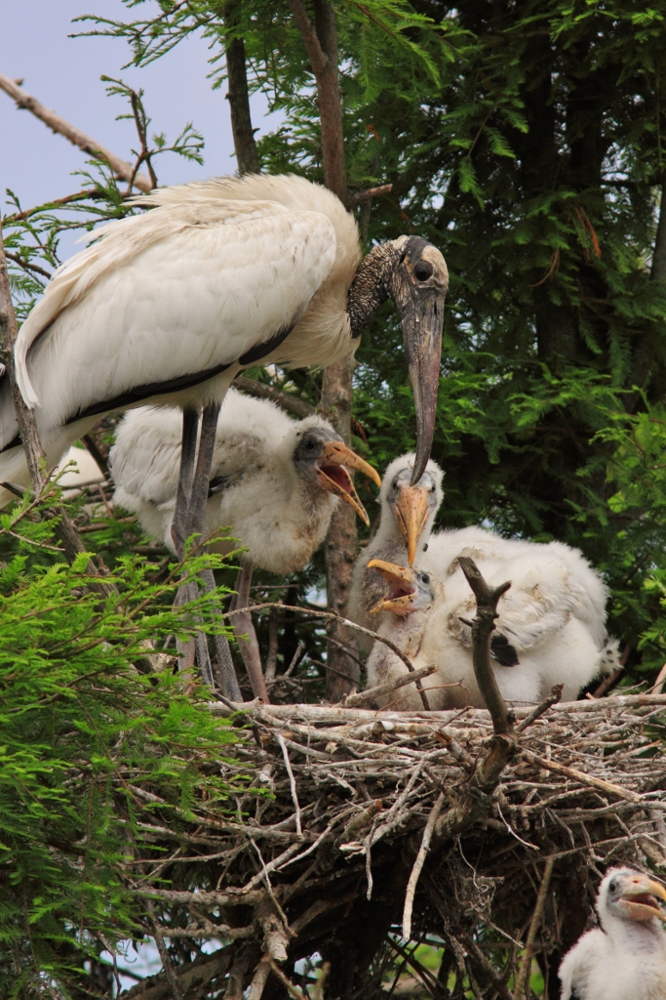

Will the chicks have it?
A wood stork parent came into our Field Station for a check-up. It had gotten tangled in fishing line near its nest. Its three chicks are safe back at the nest.
A volunteer filled in the stork’s traits, but left the last column blank: Will the chicks have it? She wasn’t sure how to tell. Can you help? First, practice on three animal families. Then finish my form.
| Trait | Will the chicks have it? |
|---|---|
| Bald, scaly gray head | ? |
| Long, thick bill that curves down | ? |
| A bent toe from the fishing line | ? |
| A metal ID band on one leg | ? |
| Thin after a dry spring | ? |
Set up a family reunion
Build three animal families, each a parent and a baby. Then tell what the baby got from its parent, and what it won’t get.
Tap the box next to each step when you finish it.
- 🖥️Before you put on your headset
- Step 1 · Know your familiesEach family is two copies of the same model: a big one for the parent and a small one for the baby. Type the gray words in the Filter models box. This list is also in VR: open your menu, click Assignments, then click our assignment.Family 1Bear (OptimaED) + a small bear cubtype: Bear👪 cub got: black fur
🌍 mom’s: ear tag from scientistsFamily 2Animated Deer + a small fawntype: Deer👪 fawn got: big ears
🌍 mom’s: scrape from a fenceFamily 3Barn Owl + a small owlettype: Barn Owl👪 owlet got: heart-shaped face
🌍 dad’s: knows where mice hide - 🥽In VR
- Step 2 · Go inPut on your headset and open the On-Demand app. Click the Explore tab and find The Countryside. (Typing it in the Filter environments box finds it fast.) Click it, then click Begin Solo. Look around and pick three open spots for your families.
- Step 3 · Make the first familyPress the top button on your right controller to open your menu, then click the Models tab. Bring out a Bear for the parent. Bring out a second Bear, then make it small. That’s the cub! Set the cub right next to its mom.✋ To move a model: grab it with the palm trigger (the button under your middle finger). Turn and move it with the thumbstick. Grab it with both palm triggers and bring your hands together to make it smaller.
- Step 4 · Finish the reunionMake the deer family and the barn owl family the same way, a few steps apart. Then walk to each family and say two things out loud, like this:🗣 “The cub got its black fur from its mom. That’s inherited. Mom’s ear tag came from scientists. That’s from the environment, so the cub won’t get it.”Use the examples in Step 1, or think of your own.
- Step 5 · BonusVR onlyAdd a fourth family that lives in the countryside: try Dairy Cow, Sheep, Pig or Chicken. Say one trait the baby inherited and one trait that is both (like size). Skip this step if you run out of time.
- Step 6 · Save (capture)Stand back so you can see all three families. Open your menu and click the Captures tab, then click Capture. Type a title, like your first name. For Class, pick our class (not No class (personal)). For Assignment, pick 13.01 VR · Family Reunion. Click Save, then look for Submitted at the bottom of the menu.🔁 Want to fix something? Move the models and save again. Your new capture takes the place of the old one.
- ✅After
- Step 7 · Add your caption in CanvasClick Leave in the top right corner of your menu and take off your headset. VR can’t hold words, so your caption goes in Canvas. Pick one family and finish this sentence: Then click the green button below the steps when it appears, and paste into the Canvas assignment box. (Or type VR option submitted and your caption yourself.)
🛟Having trouble in VR?Steps with pictures, and a how-to video
How-to video: Completing Assignments in Optima On-Demand (2 minutes)
These pictures come from a space map. Your map will be The Countryside, but the buttons are the same.
 1Explore tab
1Explore tabOn your dashboard, click the Explore tab. Scroll with the bar on the right, or type the map’s name in Filter environments.
 2Begin Solo
2Begin SoloClick the map, then click Begin Solo. Only a solo room (just you) can save your work.
 3Open your menu
3Open your menuPress the top button on your right controller. The menu tabs are Environments, Models, Assignments and Captures.
 4Read the assignment
4Read the assignmentClick Assignments, then click our assignment. What to build shows on the right.
 5Bring out the models
5Bring out the modelsClick Models. Type in the Filter models box to find the parts. Click a part to bring it out.
 6Move and resize
6Move and resizeGrab a part with the palm trigger. Turn and move it with the thumbstick. Use both palm triggers to make it bigger or smaller.
 7Capture
7CaptureWhen it looks right, open your menu, click Captures, then click Capture.
 8Pick the class and assignment
8Pick the class and assignmentType a title. For Class, pick our class, not No class (personal). For Assignment, pick ours. Click Save.
 9Check, then leave
9Check, then leaveLook for Submitted at the bottom of the menu. Then click Leave in the top right corner.
- Your capture shows three families, each with a big parent and a small baby.
- Your Canvas box has “VR option submitted” and one caption with an inherited trait and an environment trait.
Golden Paw badge earned!
Only VR field assistants earn this one. Dr. Reyes will visit your reunion and read your caption.
The pass-it-down gate
Here is every trait on the wood stork’s full chart. Decide where each one goes at the family gate.
- ⬇ Passes to the chicks: the trait is inherited. The chicks will have it too.
- ↕ Both: the parents pass down part of it, and the environment decides the rest.
- ✋ Stays with the parent: it came from the environment. The chicks won’t get it.

⬇ Passed to the chicks
↕ Both
✋ Stays with the parent
Write a paragraph (4 or 5 sentences)
Pick one trait the chicks will get and one trait they won’t get. Explain why each one does or does not pass down.
- The chicks will get the parent’s ___ because it is an inherited trait.
- That means it came from ___.
- The chicks won’t get the ___ because it came from the environment.
- It happened when ___.
- All 10 traits went through the gate.
- Your paragraph is at least 40 words and all 5 checks are lit.
How to turn it in: click the green button, choose Save as PDF, then upload that file to the Canvas assignment.